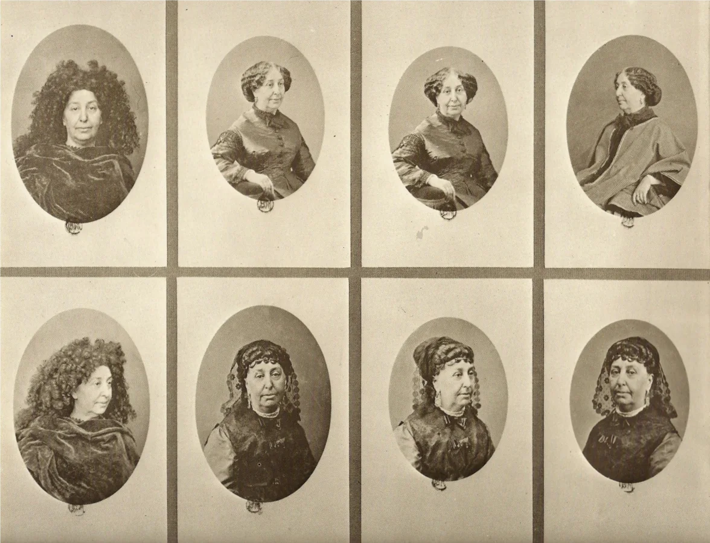

Au XIXe siècle, plusieurs autrices ont publié sous un nom d’emprunt. Mais la question « pourquoi ? » n’a pas une réponse unique : certaines expliquent leur choix, d’autres laissent moins de traces, et toutes n’ont pas adopté un nom masculin.
Objectif de lecture. Distinguer un fait établi par une source, une interprétation biographique et une question qui reste ouverte.
Un pseudonyme remplace le nom de l’autrice. Une publication anonyme, elle, ne donne aucun nom d’auteur — ou seulement une formule comme « par une dame ». Ces stratégies ne sont pas interchangeables.
Les cas qui suivent ne forment donc pas un catalogue de « raisons des femmes ». Ils montrent des signatures qui ne révèlent pas toutes la même chose : un prénom ambigu, un nom masculin ou une formule comme « par une dame ». Pour les comparer, il faut distinguer ce que les autrices ont expliqué, ce que les documents établissent et ce que les historiens interprètent. [1][5]
Les sœurs Brontë : éviter les préjugés, sans prendre un nom franchement masculin

En 1846, Charlotte, Emily et Anne Brontë font paraître un recueil de poèmes sous les signatures Currer, Ellis et Acton Bell. Dans une notice publiée en 1850, Charlotte revient elle-même sur ce choix. Elle dit que les sœurs voulaient éviter la publicité personnelle et ne souhaitaient pas annoncer qu’elles étaient des femmes, car elles craignaient les préjugés et les attaques personnelles de certains critiques. [1][7]
Cette précision est importante : Charlotte décrit leurs prénoms comme ambigus. Les sœurs avaient envisagé des prénoms « positivement masculins », c’est-à-dire clairement masculins. Il est donc plus juste de dire que leurs signatures ne révélaient pas clairement leur sexe que de parler d’un simple déguisement en hommes. Le Brontë Parsonage Museum résume leur objectif comme le souhait que les textes soient jugés pour leurs qualités plutôt qu’en fonction du sexe de leurs autrices. [2]
Leur parcours aide à mesurer ce que ce choix engageait. La famille n’était pas riche et les enfants étaient censés gagner leur vie ; Charlotte, Emily et Anne travaillèrent notamment comme enseignantes ou gouvernantes. Le musée souligne aussi que leur père encourageait leur éducation. Ces éléments décrivent leur contexte matériel et familial, mais ne prouvent pas à eux seuls la raison des pseudonymes : pour celle-ci, le témoignage de Charlotte reste la source la plus directe. [2]
Quelques romans repères des sœurs Brontë [8]
- Charlotte Brontë : Jane Eyre, Villette, Shirley.
- Emily Brontë : Les Hauts de Hurlevent (Wuthering Heights).
- Anne Brontë : Agnes Grey, La Recluse de Wildfell Hall (The Tenant of Wildfell Hall).
Une petite pause pour réfléchir
Petit voyage dans le temps 🌷
À ton avis, cette idée est-elle clairement écrite dans les sources, ou est-ce une façon actuelle de relire l’histoire ?
« Les sœurs Brontë ont choisi leurs noms de plume pour défendre les droits des femmes. »
George Eliot : la signature et la vie privée

Née Mary Anne Evans, elle adopte le prénom Marian en 1851. En 1857, elle propose à son éditeur William Blackwood de publier ses œuvres de fiction sous le nom de George Eliot, selon l’Université d’Oxford. La notice associe ce choix à plusieurs enjeux : dissimuler qu’elle est une femme et protéger sa vie privée. À cette époque, elle vit en couple avec George Henry Lewes, qui est encore marié. [3]
Il faut distinguer les niveaux de preuve : la notice d’Oxford rapporte la proposition faite à l’éditeur ; l’explication des motifs relève d’une interprétation biographique. Elle permet de parler d’un choix à plusieurs enjeux, sans démontrer que la recherche de reconnaissance littéraire en fut l’unique raison.
Le pseudonyme apparaît après plusieurs années de travail intellectuel sous d’autres formes. Mary Anne puis Marian Evans traduit en 1846 un ouvrage de David Friedrich Strauss et participe, à partir de 1850, à la direction de la revue The Westminster Review. Des essais qu’elle y publie paraissent anonymement. « George Eliot » n’est donc pas le passage d’une vie sans écriture à une carrière d’autrice : c’est une nouvelle signature, adoptée au moment où elle commence à publier de la fiction. Cette chronologie invite à ne pas réduire toute son œuvre à un seul masque. [15]
Quelques romans repères de George Eliot [9]
- Middlemarch
- Le Moulin sur la Floss (The Mill on the Floss)
- Silas Marner
George Sand : ce que la notice établit — et ce qu’elle ne dit pas

La Bibliothèque nationale de France identifie George Sand comme le pseudonyme d’une femme de lettres née Dupin. Elle indique aussi qu’Aurore Dupin a écrit en collaboration avec Jules Sandeau sous le nom de « Jules Sand », ainsi que sous le pseudonyme Blaise Bonnin. [4]
Ces données montrent que son parcours de signature ne se résume pas à un seul nom. En revanche, la notice d’autorité de la BnF ne donne pas à elle seule la raison exacte du choix de « George Sand » : je ne la présente donc pas comme un motif établi.
On peut toutefois préciser l’origine du nom et sa date d’apparition. La BnF explique que « George Sand » se forme à partir du nom de Jules Sandeau, avec qui Aurore Dupin débute en littérature. Après leurs premiers travaux communs, dont le roman Rose et Blanche en 1831, Indiana paraît en 1832 signé George Sand. La biographie de l’Institut de France décrit ce pseudonyme comme un moyen d’anonymat et d’indépendance ; cette interprétation éclaire le contexte, sans établir un motif unique ou définitif. [13][14]
Quelques romans repères de George Sand [10]
- Indiana
- Consuelo
- La Mare au Diable
Un nom d’homme n’était pas la seule stratégie
Jane Austen offre un contrepoint utile : Sense and Sensibility, son premier roman publié, paraît en 1811 sous la mention « By a Lady » (« par une dame »). La page de titre de Pride and Prejudice indique ensuite « By the Author of Sense & Sensibility » : l’autrice reste anonyme, mais ses livres sont reliés entre eux. Son nom est publiquement associé à ses œuvres après sa mort, dans la notice biographique de Northanger Abbey et Persuasion, parus ensemble en décembre 1817, avec la date de 1818 imprimée sur l’édition. [5]
Jane Austen’s House indique que son frère Henry l’a aidée à trouver un éditeur et que Sense and Sensibility paraît « sur commission » : Austen assume alors le risque financier de l’impression. Ces conditions éclairent l’organisation de la publication, sans expliquer à elles seules son anonymat. [11]
Pour les femmes de son milieu, faire carrière n’était pas une voie ordinaire et écrire contre rémunération pouvait être jugé inconvenant. Ce contexte ne constitue pas une déclaration personnelle d’Austen sur ses motifs. La British Library rappelle qu’elle avait cherché à faire publier un roman dès 1803 : son rapport à l’édition ne se résume donc pas à une réticence à publier. Il faut distinguer normes sociales, traces éditoriales et choix individuels. [12][5]
Une étude publiée par le CÉRÉdI de l’Université de Rouen montre, pour les écrivaines-journalistes du XIXe siècle, une pluralité de pratiques : nom civil, initiales, anonymat et pseudonymes. Son corpus porte sur la presse féminine ; il éclaire cette diversité sans autoriser à généraliser ses conclusions à toutes les autrices ni à tous les genres littéraires. [6]
La signature pouvait aussi servir à éprouver la réception d’un texte. L’étude de Nancy Henry indique que George Eliot adopta en partie son pseudonyme pour voir comment ses récits seraient accueillis sans préjugés liés à son identité ou à son sexe. Cela documente une intention ; cela ne prouve ni que tous les lecteurs l’ont crue homme, ni que le pseudonyme a déterminé leurs critiques. [16]
THOT · À toi de jouer
Petit jeu : relie chaque nom à son autrice
Choisis un nom de plume, puis l’autrice correspondante. Sur téléphone, touche les deux noms l’un après l’autre ; au clavier, utilise Tab et Entrée.
Commence par sélectionner un nom de plume dans la colonne de gauche.
Le jeu n’est pas encore prêt. Recharger la page ou ouvrir sa page dédiée.
Noms de plume
Autrices
À toi de jouer.
0 association sur 5 trouvée.
Les réponses : cinq noms, des histoires différentes
- Currer Bell — Charlotte Brontë ; Ellis Bell — Emily Brontë ; Acton Bell — Anne Brontë. Charlotte explique que ces choix étaient ambigus et motivés à la fois par le désir d’éviter la publicité et par la crainte de préjugés. Source [1] Source [7]
- George Eliot — Mary Anne (« Marian ») Evans. L’Université d’Oxford date la création du pseudonyme de 1857 et évoque deux enjeux : ne pas révéler le sexe de l’autrice et masquer sa situation sociale avec George Henry Lewes, alors marié. C’est une interprétation biographique, pas une règle valable pour toutes les autrices. Source [3]
- George Sand — Aurore Dupin. La notice d’autorité de la BnF confirme l’identité et signale aussi une publication en collaboration avec Jules Sandeau sous le pseudonyme « Jules Sand ». Cette notice établit des faits bibliographiques ; elle ne suffit pas à prouver pourquoi Aurore Dupin a ensuite retenu « George Sand ». Source [4]
Tu peux aussi refaire le jeu sur sa page dédiée.
Ce qu’il faut retenir
- Pour les Brontë, Charlotte formule explicitement la crainte des préjugés et le souhait d’éviter la publicité personnelle.
- Pour George Eliot, les sources biographiques avancent plusieurs motifs, dont le genre et la vie privée.
- Pour George Sand, les sources consultées établissent l’identité et l’histoire de plusieurs signatures, mais pas à elles seules le motif du choix de « George ».
- Les pseudonymes masculins ne résument pas l’histoire de la publication des femmes : l’anonymat et d’autres signatures existent aussi.
THOT · Les repères scientifiques
Ce qu’on sait, ce qui reste à discuter
Ce qu’on sait
- Charlotte Brontë explique rétrospectivement le choix des signatures Currer, Ellis et Acton Bell : éviter la publicité personnelle et les préjugés visant les autrices. Elle décrit ces prénoms comme ambigus. [1]
Ce qui reste incertain
Aucune controverse précise entre chercheurs n’est documentée ici : les limites concernent les sources et les intentions.
- Jane Austen’s House indique que la raison de l’anonymat d’Austen n’est pas connue avec certitude. Une mention sur une page de titre établit une manière de signer, pas à elle seule une motivation. [5]
- Le témoignage de Charlotte éclaire son cas et celui de ses sœurs. Il ne suffit pas à expliquer le choix de toutes les autrices. [1]
Sources et références
Lire nos sources. Sources primaires : documents, données ou recherches originales. Sources secondaires : analyses et synthèses. Ressources complémentaires : notices, dossiers et presse. Ces catégories décrivent les documents ; elles ne garantissent pas leur fiabilité. Une notice ne remplace pas la lecture du document qu’elle décrit.
- Source primaire · témoignage rétrospectif Charlotte Brontë, « Biographical Notice of Ellis and Acton Bell », préface à l’édition de 1850 de Wuthering Heights et Agnes Grey ; texte consultable dans Charlotte Brontë’s Notes on the pseudonyms used, Project Gutenberg. Source primaire rétrospective, transcrite d’après l’édition John Murray de 1910. Lire le texte.
- Ressource complémentaire · notice muséale The Brontë Parsonage Museum, « An introduction to the Brontës », notice sur les pseudonymes et leur réception. Consulter.
- Ressource complémentaire · notice biographique University of Oxford, Great Writers Inspire, « George Eliot », notice biographique sur le choix du pseudonyme en 1857. Consulter.
- Ressource complémentaire · notice d’autorité Bibliothèque nationale de France, Catalogue général, « Sand, George (1804–1876) », notice d’autorité. Consulter.
- Ressource complémentaire · ressources patrimoniales Jane Austen’s House, « Publication », sur la mention « By the Author of “Sense & Sensibility” » dans la première édition de Pride and Prejudice et sur l’absence de certitude quant au motif de l’anonymat ; British Library, « Jane Austen: names and notability », sur l’édition de 1811 de Sense and Sensibility et son attribution « By a Lady ». Jane Austen’s House · British Library. Chronologie des éditions posthumes : Jane Austen’s House, notice de première édition · Cambridge University Press, introduction et note sur le texte.
- Source secondaire · étude historique Lucie Barette, « Usage de la pseudonymie par les écrivaines-journalistes de presse féminine au XIXe siècle », Les Pratiques d’écriture en collaboration des autrices, CÉRÉdI, actes de colloque, no 34, 2025. Étude de cas portant sur la presse féminine. Lire l’étude.
- Ressource complémentaire · notice de collection The Morgan Library & Museum, notice de catalogue de Poems by Currer, Ellis and Acton Bell (Londres, Aylott and Jones, 1846), identifiant les pseudonymes comme ceux de Charlotte, Emily et Anne Brontë. Consulter la notice.
- Ressource complémentaire · repères muséaux Brontë Parsonage Museum, « The Brontë novels », repères sur les romans de Charlotte, Emily et Anne Brontë. Consulter.
- Ressource complémentaire · bibliographie de lecture Warwickshire County Council, « George Eliot: a reading list », liste des romans de George Eliot. Consulter.
- Ressource complémentaire · notice bibliographique Bibliothèque nationale de France, Catalogue général, notice bibliographique des Œuvres illustrées de George Sand, qui répertorie notamment Indiana, Consuelo et La Mare au diable. Consulter la notice.
- Ressource complémentaire · notice patrimoniale Jane Austen’s House, « Sense and Sensibility », publication, édition sur commission et première réception du roman. Consulter la notice.
- Ressource complémentaire · présentation d’une annonce et notices Jane Austen’s House, « Newspaper announcement of Sense and Sensibility », annonce de 1811 et contexte éditorial ; British Library, « Jane Austen: names and notability », sur la publication de ses œuvres et l’identification posthume de l’autrice. Jane Austen’s House · British Library.
- Ressource complémentaire · dossier pédagogique Bibliothèque nationale de France, « L’Aventure des écritures : la page », sur l’origine du pseudonyme George Sand et l’édition d’Indiana en 1832. Consulter la ressource.
- Ressource complémentaire · biographie institutionnelle Institut de France, « George Sand — Biographie », sur les premières publications avec Jules Sandeau et la parution d’Indiana sous le nom George Sand en 1832. Consulter la biographie.
- Source secondaire · synthèse universitaire Stanford Encyclopedia of Philosophy, « George Eliot », notice biographique sur les travaux de traduction, de presse et de fiction de Mary Anne Evans. Consulter la notice.
- Source secondaire · ouvrage universitaire Nancy Henry, The Cambridge Introduction to George Eliot, chapitre 5, « Afterlife », Cambridge University Press, 2008, sur le pseudonyme et la réception des premières œuvres de fiction. Consulter le chapitre.
Méthode : les paroles de Charlotte Brontë sont distinguées des notices rédigées par des institutions et des interprétations biographiques. Quand une source permet d’établir une identité mais pas un motif, l’article le précise.